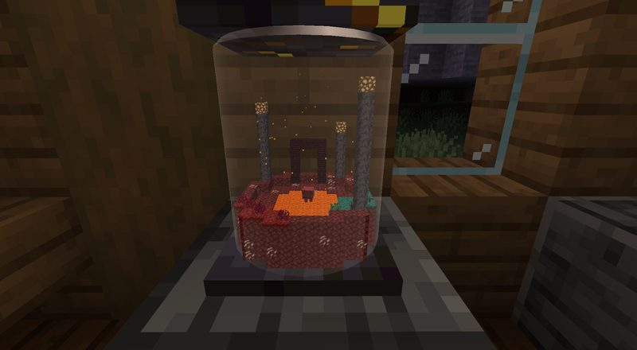
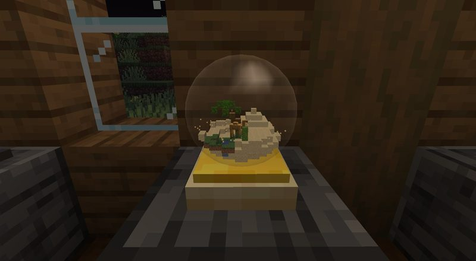
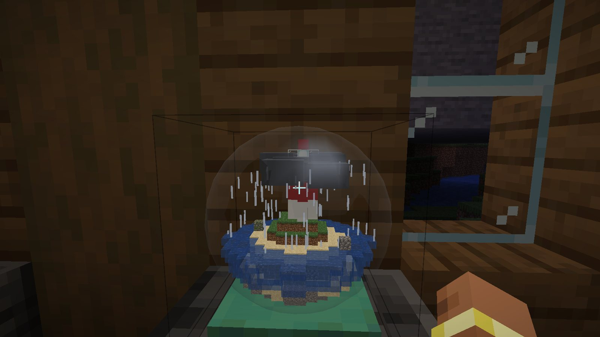
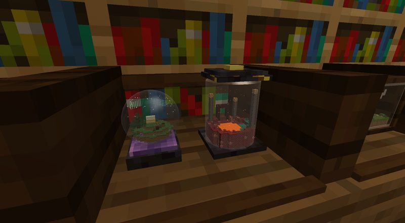
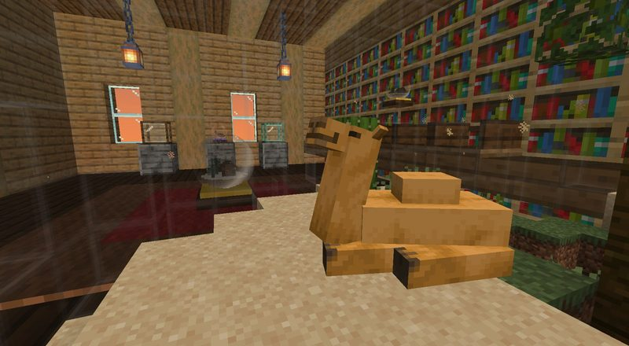
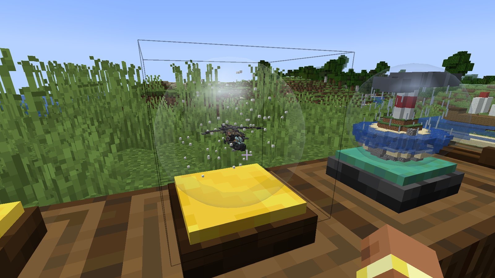

Getting in
Install
- Install NeoForge 21.1.262 for Minecraft 1.21.1: run the installer and choose Install client.
- Start the game once with the new neoforge profile, then close it.
- Copy the four jars from the zip's
modsfolder into%appdata%\.minecraft\mods. Had Snow Globes before? Delete the oldsnowglobe-1.0.0.jarthere first. - Start Minecraft with the neoforge profile.
Join Nick's world
- Ask Nick for today's address. It looks like
something.uk.e4mc.link, and it changes each time the world opens. - Multiplayer → Direct Connection, paste it, join.
- Got an "incompatible mods" message? Download the zip again: it's always the latest.
In the pack
| Worlds in Glass | 1.0.0 |
| Create | 6.0.10 |
| Create Aeronautics | 1.3.2 |
| Sable | 2.0.6 |
A look inside






What's new
1.0.0 Latest
17 October 2026
- New name: Worlds in Glass (it was Snow Globes), since it's globes, jars and bottles with whole worlds inside.
- Four new globes: desert globe, aquarium, star globe and nether jar, each with its own sky and weather inside.
- Every globe starts as a glass bulb, blown with a new glassblower's pipe. Recipes changed to match.
- Twin globes: a globe, an empty one of the same kind and an ender pearl make two globes with one world inside.
- Collector's shelf, turntable and name plates (name tag on, axe off).
- Players inside a globe show up tiny in its miniature.
- Snow globe seasons: shake it round the year; real snow settles in winter.
- Fish go in by bucket, animals on a lead come along, and globes can stand inside globes.
- Wandering traders and old chests sometimes have globes with a world already in them.
- The Globe Keeper's Handbook, an advancement trail, a creative tab, tooltips and settings.
- Fixes: glass cases no longer wobble, big globes' bases stay still, no more falling through the pedestal from inside.
0.3
16 October 2026
- From inside, the real world around the globe is there, giant, with players and animals walking past.
- Shakes and knocks from outside are felt inside; going in and out is a short zoom.
- Storm globes storm inside too, with lightning and thunder in step with the miniature.
- Right-click a globe with a Create schematic to build it inside. Survival pays for every block.
- Much faster drawing of big miniatures.
0.2
15 October 2026
- Moved to NeoForge 1.21.1. Globes grow up to 256 blocks across, and look bigger as they grow.
- Shake and turn globes; round globes zoom in on what's inside.
0.1
15 October 2026
- First version: snow globe, terrarium, storm globe and ship in a bottle, with live mobs in the miniature.